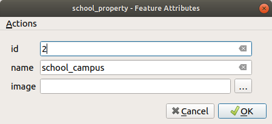

Now that you have seen a default action in the previous lesson, it is
time to define your own actions.
An action is something that happens when you click on a feature.
It can add a lot of extra functionality to your map, allowing you to
retrieve additional information about an object, for example.
Assigning actions can add a whole new dimension to your map!
The goal for this lesson: To learn how to add custom actions.
In this lesson you will use the school_property layer you
created previously.
The sample data include photos of each of the three properties you
digitized.
What we are going to do is to associate each property with its image.
Then we will create an action that will open the image for a property
when clicking on the property.
The school_property layer has no way to associate an image with a
property yet. First we will create a field for this purpose.
Open the Layer Properties dialog.
Click on the Fields tab.
Toggle editing mode:
Add a new column:
Enter the values below:
After the field has been created, move to the
Attributes Form tab and select the image field.
Set Widget Type to Attachment:
Click OK in the Layer Properties dialog.
Use the Identify tool to click on one of the three
features in the school_property layer.
Since you are still in edit mode, the dialog should be active and
look like this:

Click on the browse button (the … next to the
image field).
Select the path for your image. The images are in
exercise_data/school_property_photos/ and are named the
same as the features they should be associated with.
Click OK.
Associate all of the images with the correct features using this
method.
Let’s say we are looking at the map and want to know more about the area that a
farm is in. Suppose you know nothing of the area in question and want to find
general information about it. Your first impulse, considering that you’re using
a computer right now, would probably be to Google the name of the area. So
let’s tell QGIS to do that automatically for us!
Open the attribute table for the landuse layer.
We will be using the name field for each of our landuse
areas to search Google.
Close the attribute table.
Go back to Actions in Layer Properties.
Click on the Create Default Actions button to add a
number of pre-defined actions.
Remove all the actions but the Open URL action with
the short name Search Web using the Remove the selected action button below.
Double-click on the remaining action to edit it
Change the Description to GoogleSearch, and
remove the content of the Short Name field.
Make sure that Canvas is among the
checked Action scopes.
What to do next varies according to your operating system, so
choose the appropriate course to follow:
Windows
Under Type, choose Open.
This will tell Windows to open an Internet address in your
default browser, such as Internet Explorer.
Ubuntu Linux
Under Action, write xdg-open.
This will tell Ubuntu to open an Internet address in your
default browser, such as Chrome or Firefox.
macOS
Under Action, write open.
This will tell macOS to open an Internet address in your default
browser, such as Safari.
Now you can continue writing the command
Whichever command you used above, you need to tell it which
Internet address to open next.
You want it to visit Google, and to search for a phrase
automatically.
Usually when you use Google, you enter your search phrase into the
Google Search bar.
But in this case, you want your computer to do this for you.
The way you tell Google to search for something (if you don’t want
to use its search bar directly) is by giving your Internet browser
the address
https://www.google.com/search?q=SEARCH_PHRASE,
where SEARCH_PHRASE` is what you want to search for.
Since we don’t know what phrase to search for yet, we will just
enter the first part (without the search phrase).
In the Action field, write
https://www.google.com/search?q=.
Remember to add a space after your initial command before writing
this in!
Now you want QGIS to tell the browser to tell Google to search for
the value of name for any feature that you could click on.
Select the name field.
Click Insert button:
What this means is that QGIS is going to open the browser and send
it to the address
https://www.google.com/search?q=[%"name"%].
[%"name"%] tells QGIS to use the contents of the name
field as the phrase to search for.
So if, for example, the landuse area you click on is named
MarlothNatureReserve, QGIS is going to send the browser
to https://www.google.com/search?q=Marloth%20Nature%20Reserve,
which will cause your browser to visit Google, which will in turn
search for “Marloth Nature Reserve”.
If you have not done so already, set everything up as explained
above.
Click the OK button to close the
Add New Action dialog
Click OK to close the Layer Properties
dialog
Now to test the new action.
With the landuse layer active in the
Layers panel, click on the down arrow to the right of
the Run feature action button, and select the
only action (GoogleSearch) defined for this layer.
Click on any landuse area you can see on the map.
Your browser will now open, and will start a Google search for the
place that is recorded as that area’s name value.
Note
If your action doesn’t work, check that everything was
entered correctly; typos are common with this kind of work!
5.4.4. ★★★ Follow Along: Open a Webpage Directly in QGIS
Above, you’ve seen how to open a webpage in an external browser. There are some
shortcomings with this approach in that it adds an unknowable dependency – will
the end-user have the software required to execute the action on their system?
As you’ve seen, they don’t necessarily even have the same kind of base command
for the same kind of action, if you don’t know which OS they will be using. With
some OS versions, the above commands to open the browser might not work at all.
This could be an insurmountable problem.
However, QGIS sits on top of the incredibly powerful and versatile Qt library.
Also, QGIS actions can be arbitrary, tokenized (i.e. using variable information
based on the contents of a field attribute) Python commands!
Now you will see how to use a python action to show a web page.
It is the same general idea as opening a site in an external browser,
but it requires no browser on the user’s system since it uses the Qt
QWebView class (which is a webkit based html widget) to display the
content in a pop-up window.
Let us use Wikipedia this time.
So the URL you request will look like this:
https://wikipedia.org/wiki/SEARCH_PHRASE
To create the layer action:
Open the Layer Properties dialog and head over to the
Actions tab.
Set up a new action using the following properties for the action:
Actions allow you to give your map extra functionality, useful to the
end-user who views the same map in QGIS.
Due to the fact that processes called can be shell commands for any
operating system, as well as Python, the sky is the limit in terms of
the functions you could incorporate!
Now that you’ve done all kinds of vector data creation, you will
learn how to analyze the data to solve problems.
That is the topic of the next module.


 Add a new action button.
Add a new action button.
 Run feature action button (in the
Attributes Toolbar).
Run feature action button (in the
Attributes Toolbar).
 Remove the selected action button below.
Remove the selected action button below.